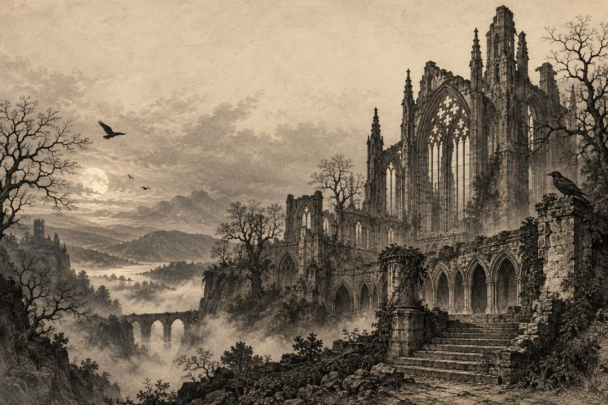

◆ WHERE DARKNESS BECOMES LITERATURE
Beautiful minds.
Haunting tales.
Step into the shadows of Gothic literature. Explore the lives, obsessions, and extraordinary works of the authors who taught us to fear—and to feel.
Explore the authors ↓✧
Three remarkable voices.
One enduring fascination with the dark.

✦THE SUBLIME✦THE SUPERNATURAL✦THE BEAUTIFULLY UNCANNY✦THE HUMAN CONDITION
II. A LITERATURE OF SHADOWS
More than a ghost story.
Behind the ruined castles and midnight visitors, Gothic literature asks deeply human questions. What do we owe our creations? What do we fear in the stranger? Can we trust our own minds?
From Shelley’s lonely creature to Stoker’s elusive Count and Poe’s haunted narrators, the darkness offers a different way of seeing ourselves.
FEAR. WONDER.
OBSESSION. BEAUTY.
OBSESSION. BEAUTY.
Enter with curiosity.
Leave with a story.